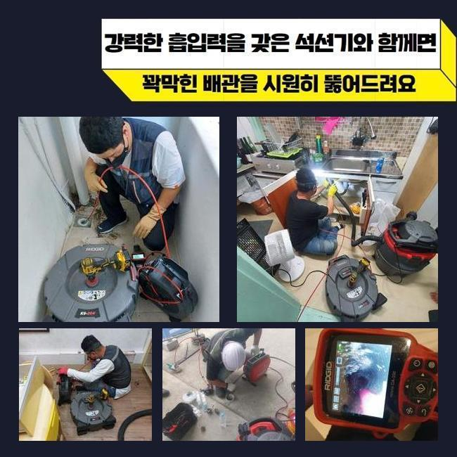
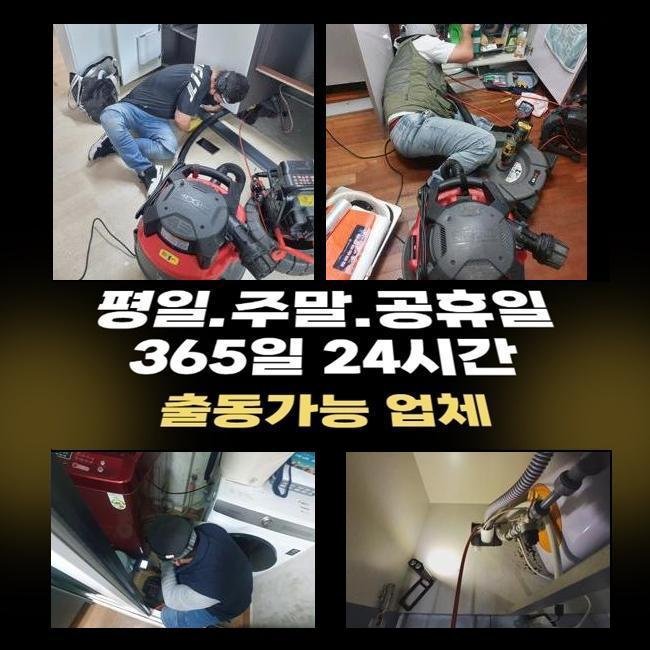
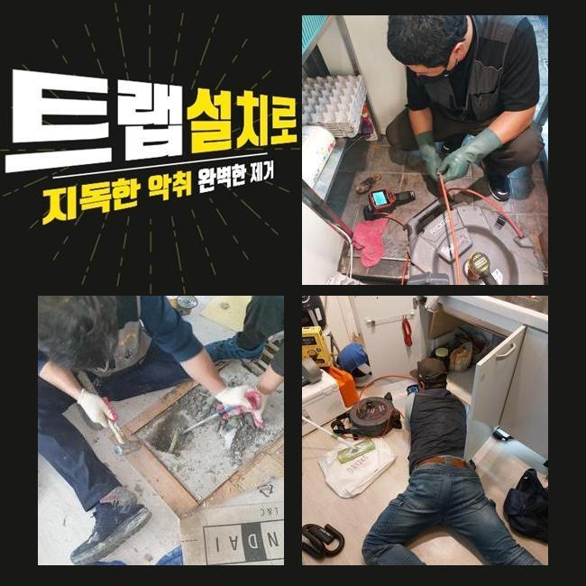
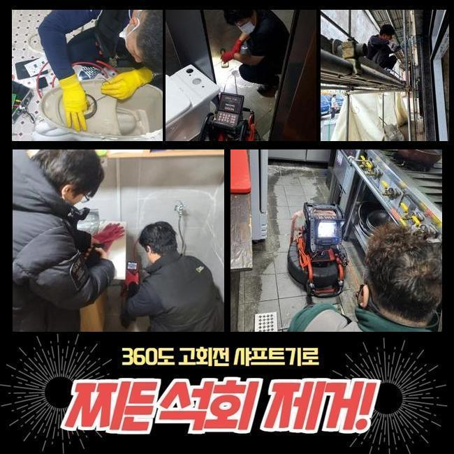
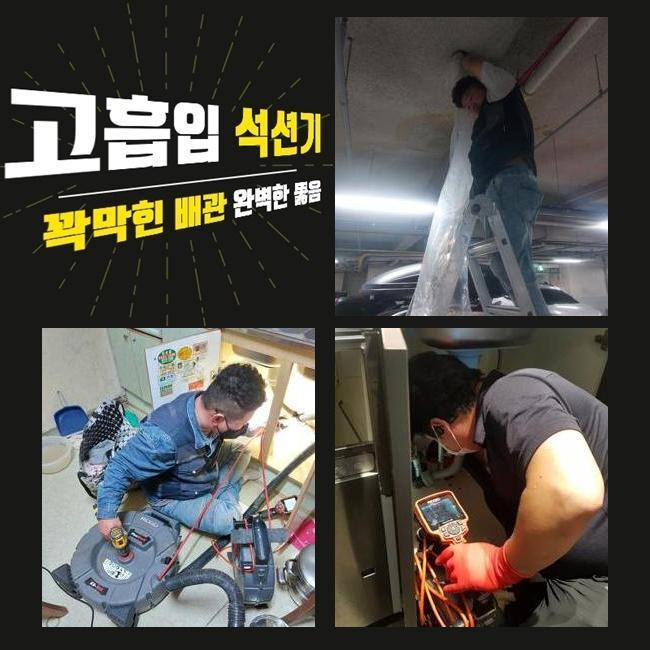
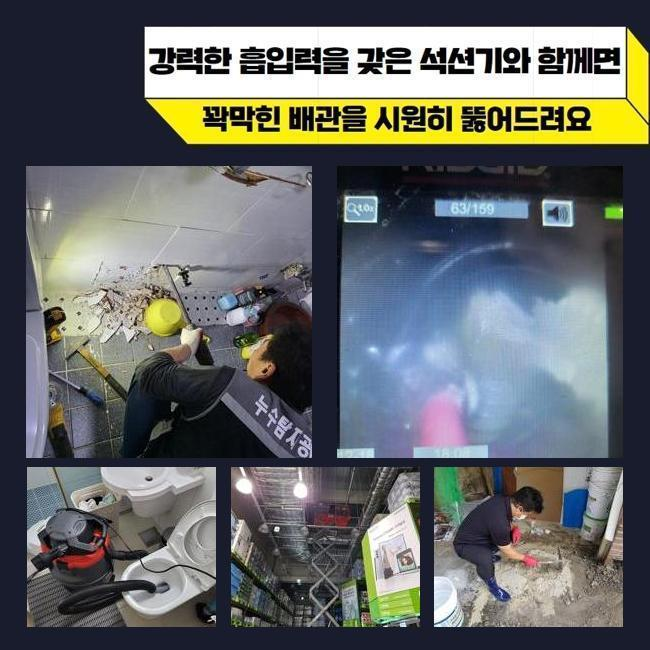

🏠 중구 필동오수관뚫음 북창동 고압세척비용 배관막힘
용인 싱크대막힘 전문 시공 후기

📋 작업 개요
- 위치: 용인
- 서비스 유형: 싱크대막힘, 배관막힘, 누수수리, 역류해결, 뚫는업체, 고압세척, 설비공사, 배관보수, 악취차단
- 작업 일시: 2024. 12. 7. 10:11
- 업체명: 하수구수사대 (010-5615-2118)
🔍 문제 상황
중구 필동오수관뚫음 북창동 고압세척비용 배관막힘
싱크대 등에서 온전히 오수가 빠져나가지않으면 당황하시게 될 것이며 혼자서 해결이 안되는 상황이기 때문에 관련 기공을 부르시게 되겠죠
금번에는 그것과 연계된 파이프 차단 사태를 설명해드리겠습니다
저희팀이 내방한 손님의 거주지는 5일정도 전 배수기능이 마비되어 삶에 트러블을 만들고 있었죠
배수관이 정체를 이룬다면 수도가 신속히 빠져버리지 못해서 악취가 발생할 가능성이 높고 중대한 장애를 가져오기도 한답니다
따라서 즉각적인 해결이 촉구되며 막힘을 목격하신 손님께서는 제때 기술 지원을 받아시는 편을 추천합니다
그 문제들을 처리하기 위하여 우선적으로 헤아려볼 건 배수부분 관계설비입니다
관로 이용등에 적합하지 않은 습관등을 갖고 계시다면 배수흐름이 온전히 가동하지 않는 경우도 많아요
그러하기에 정기적인 세척과 진단과정을 통하여 사전적으로 차단하시는게 합당합니다
수리중에는 배관카메라를 써서 고질적인 장애가 잔존하는 구간을 찬찬히 확인한뒤 세척을 시작해요
시공히 똑바로 시행되려면 밀도있는 체크가 필수불가결하기 때문이랍니다
잔류물이 쌓였던 처소에서는 희석약품을 넣어서 안정적으로 해결되게끔 유연하게 세척을 수행했어요
세정을 하고 점차적으로 이물들은 빠졌지만 총체적 정리까지는 상당량의 작업시간이 소요됐죠
기름슬러지와 석회물질 등을 소쇄하려 샤프트 장비를 가동시키기로 하였죠

🔎 원인 분석
💡 전문가 진단: 정밀 진단 장비를 사용하여 슬러지의 고착 여부를 판명하고 타격/세척 작업을 실시했습니다.
장비의 전방에 붙은 단단한 노커로 노폐물을 타격하여 제거가 가능해요
노폐물이 벽쪽에 상당히 많아 플렉스샤프트 기기를 사용하여 초기작업을 계획했고 이때 석회 덩어리들과 침전물까지 없애나가려 계획했어요
방치해 버리면 심대한 트러블이 촉발될수 있기에 발빠른 대처가 요망된다고 말해드렸어요
해당 상황에서 시공할때는 부가적인 문제가 없게끔 신경써야 합니다
배관에 하중이 실리면 그부분으로 하수가 집약될수 있고 균열이 생기기도 해요
그렇기에 해당 기계를 쓸땐 필히 숙달된 기술력이 요망되죠
거기에 더해 조속히 의뢰해서 찌꺼기들이 쌓이지 않게끔 만드는게 중요하답니다
누수가 생겼는지 알아보기 위해선 배수 속도를 살피고 내시경기기를 통해서 파이프 안쪽부분을 탐지해야 됩니다
만일 그때 균열이 발굴됐다면 보수공사 등 조속한 수선을 해나가야 되죠
저희팀은 해당하는 사태가 언제든 터질수 있다는 생각을 갖고 관계된 장비들을 늘 갖추고 다니죠
관에서 일어나는 이물질의 형태를 점검해보면 관련없는 노폐물이 표출될때가 많은데요
많은 인원이 쓰는 장소라면 더 심각해질수 있어요
그런 상황에선 파이프에 자극이 들어가 누수증세까지 발현되기도 하기에 정확한 검점이 필요한 것입니다
배관카메라로 고장지점을 조사하는 일이 빠져버린다면 본질적 부분을 탐색하지 못할수도 있는데요

🔧 작업 과정
배관카메라로 파이프 안쪽을 들여다보며 노폐물과 끈끈해진 석회물질로 배수길이 막혀버렸다는 사실을 알수 있었죠
내버려두면 이물질이 역류할수가 있어 재빠른 대응이 요청되었어요
하수관은 심중하게 더러워진 상태였고 음식물 여러 이물질과 기름때가 쌓여 있는 상황이었어요
이것으로 인하여 물이 온전히 흘러가지 못해 고장이 심화된거죠
그렇기 때문에 분쇄과정과 세척작업이 요망되었어요
안에 들어간 슬러지를 검사하려는 목적으로 내시경설비를 적용했고 이에 적합한 처리를 감행하였습니다
통수와 관련한 문제점을 해결하려는 의도를 가지고 작업을 시행했어요
그러한 과정 속에서 하수관 길을 충분히 확보할수 있었죠
또한 세정 간에 발생하는 노폐물이 관로로 빠져들어 누설을 촉발할수 있기 때문에 미리 사전에 대비하는 것이 좋습니다
그걸 방지하려면 수선업무 중에 배관입구를 봉쇄하여 슬러지가 들어가지 않도록 조치하는게 좋습니다
그러한 대처방안을 통해서 순탄하게 배관 이용을 할수가 있습니다
파이프의 균열을 방지하기 위해서 조심스런 파쇄과정을 진행하며 내시경cctv를 활용하여 이물이 집약된 곳을 발견했어요
배관 밑부분엔 고착화된 석회물질이 있었으며 내버려둔다면 역류상황까지 발발할거란 사실을 알수 있었죠
우리들은 깔끔하게 이물질을 치우고 파이프를 소쇄하여 배수시스템이 순조롭게 돌아가게끔 조치했죠
이렇게 순차적인 정비를 바탕으로 수도설비의 시스템을 지속시키려는 태도가 유지되어야 하겠죠
이러한 공사과정으로 배수문제를 처리했고 추후 발생 가능한 장애도 예방할수 있었답니다
의뢰자께선 본질적인 부분을 발견하고 성과를 얻어가는 과정들이 상당히 중요하단 걸 깨달았다고 하십니다
효율적으로 세척을 하기위해서는 샤프트기계를 활용이행해야 됩니다
이것이 마련되지 않는 경우엔 노폐물을 면밀하게 세척해내기 힘겨우며 얼마뒤 또 막힐수가 있기 때문이에요
석션기기도 중대한 몫을 커버한다는 점을 말씀드려요
배관에서의 트러블은 한번이라도 목격되었다면 자체적으로 사라지기 힘들어요
그렇기에 정기적 점검업무를 통하여 장애를 사전차단하고 발발한 문제들은 속히 대응하여 해결실행해야 하죠


✅ 작업 완료
그렇게 한다면 관로에서 발생한 불편을 최소화할 수 있죠
배수문의 이물질처리를 자주하고 근방을 깨끗하게 보존한다면 정상적 배수상황을 누리실수 있답니다
우리팀은 고객님의 입장에 따라서 조속히 날을 정한다음 방문드리고 많은데요
배관이 어떻게 차단되었는지 연연하지 않고 알맞은 공구와 오랜 경험을 통하여 시공을 해드린다는점을 강조합니다
갑자기 파이프에 막힘이 생겨났다면 언제든지 의뢰 부탁드립니다
정확하게 고장을 처리해드리도록 할게요




⚠️ 베란다 누수 및 방수 관리 방법
- ✅ 비가 많이 올 때 창틀 주변이나 아래층 천장에 얼룩이 생기는지 정기적으로 확인해 보세요.
- ✅ 우수관 주변 실리콘 마감이 들뜨거나 깨진 틈새가 있는지 손상 여부를 수시로 체크하세요.
- ✅ 베란다 바닥 타일의 줄눈(메지)이 소실되면 그 틈으로 물이 침투하여 누수가 유발됩니다.
- ✅ 누수 의심 증상 발견 시 방치하면 아래층 손실이 커지므로 즉시 전문가의 진단을 받으십시오.
💡 핵심 정리
- 확실한 장비 작업(내시경 점검 및 샤프트 스케일링)으로 원인을 뿌리 뽑습니다.
- 작업 후 1년 이내에 동일한 부위 재발 시 100% 무상 A/S 서비스를 보장합니다.
- 서울 · 경기 · 인천 전 지역에 24시간 언제든 긴급 출동할 수 있도록 항시 대기 중입니다.
❓ 자주 묻는 질문 (FAQ)
🚨 용인 싱크대막힘 문제로 고민이신가요?
정확한 원인 진단과 확실한 시공으로 재발 없는 해결을 약속드립니다.
24시간 긴급 출동 | 서울 · 경기 · 인천 전지역 | 1년 내 재발 시 무상 A/S